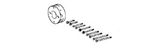
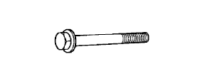
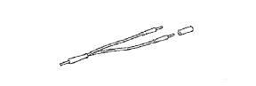

BƠM DẦU > LẮP > Chuẩn bị
|  |
|
SST

| 09213-54015
| Dụng cụ giữ puly trục khuỷu
| 
| 09330-00021
| Dụng cụ giũ bích nối
| 
| (91651-60855)
| Bu lông
|
| 09843-18030
| Dây điện cuộn nhận tín hiệu của đồng hồ No.2
| 
| 09843-18040
| Dây chẩn đoán No.2
| |
|
BÔI TRƠNHạng mục
| Dung tích
| Phân loại
| Phẩm cấp dầu
| -
| Dầu động cơ đa cấp API 20W-50 và 15W-40, phẩm cấp SL hay SM
Dầu động cơ API 10W-30 và 5W-30, phẩm cấp SL "Energy- Conserving", SM "Energy-Conserving" hay dầu đa cấp ILSAC
| Xả ra và nạp lại
| Có thay lọc dầu
| 5.6 lít (5.9 US qts, 4.9 Imp. qts)
| -
| Không thay lọc dầu
| 5.3 lít (5.6 US qts, 4.6 Imp. qts)
| -
| Đổ khô
| 6.3 lít (6.7 US qts, 5.5 Imp. qts)
| -
| |
|
SSMKeo làm kín chính hiệu của Toyota 1344, three bond 1344 hay tương đương
| -
| Keo làm kín chính hiệu của Toyota 1324, three bond 1324 hay tương đương
| -
| Hộp keo làm kín, three bond 1207B hay tương đương
| -
| |
|
THIẾT BỊBình hoặc khay chứa
| -
| Thước lá
| -
| Đầu lục giác (10 mm)
| -
| Đồng hồ đo áp suất dầu
| -
| Dụng cụ thử nắp két nước
| -
| Thước thẳng
| -
| Cờlê cân lực
| -
| Khối gỗ chèn
| -
| |
|